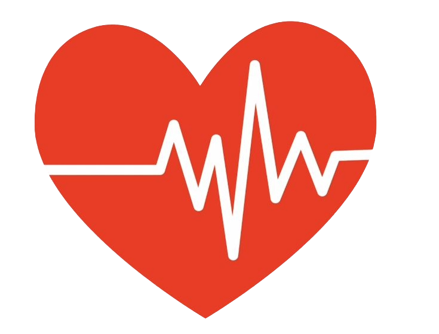
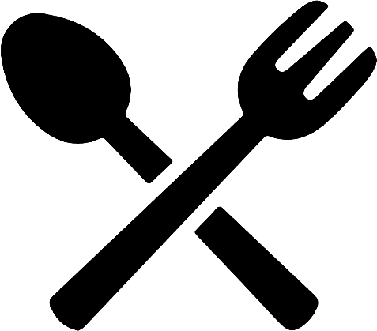

Conheça o Sangue Solidário
O Sangue Solidário surgiu da ideia de criar um espaço simples e acessível, ajudando muitas pessoas que querem doar, mas não sabem como funciona.
O site reúne informações sobre quem pode doar, tipos sanguíneos, dúvidas frequentes e histórias de pessoas que tiveram suas vidas transformadas por uma doação.
Com o objetivo de informar e conscientizar as pessoas sobre a importância da doação de sangue.
Quem pode doar sangue?
Idade
.png)
16 a 69 anos. Menores de 18 anos precisam de autorização formal dos pais ou responsáveis, e quem vai doar pela primeira vez deve ter menos de 60 anos.
Peso
.png)
O peso mínimo exigido para fazer doação de sangue é de 50 kg. Alguns hemocentros orientam a partir de 51 kg para compensar o peso das roupas.
Saúde

Você deve estar saudável, descansado e sem sintomas de gripe ou febre.
No local, os profissionais vão checar sua pressão e fazer um teste para garantir que você não tem anemia.
Alimentação

Você deve estar bem alimentado, evitando comidas gordurosas nas 3 horas anteriores à doação.
Nunca vá doar sangue em jejum.
Conheça os tipos sanguíneos
Existem diferentes tipos sanguíneos, e cada um possui características e compatibilidades diferentes.
A+
Pode doar para A+ e AB+.
Pode receber de A+, A-, O+ e O-.
A-
Pode doar para A+ e A-.
Pode receber de A- e O-.
B+
Pode doar para B+ e AB+.
Pode receber de B+, B-, O+ e O-.
B-
Pode doar para B+ e B-.
Pode receber de B- e O-.
AB+
Pode doar para AB+.
Pode receber de todos os tipos sanguíneos.
AB-
Pode doar para AB+ e AB-.
Pode receber de A-, B-, AB- e O-.
O+
Pode doar para A+, B+, AB+ e O+.
Pode receber de O+ e O-.
O-
Pode doar para A+, A-, B+, B-, AB+, AB-, O+ e O-.
Pode receber apenas de O-.
Conheça algumas de nossas histórias
Uma doação pode representar uma nova oportunidade para alguém.
Juliana Medeiros, 32 anos
Uma doação de sangue fez a diferença para Juliana e permitiu que ela tivesse uma nova oportunidade de viver.
Lucas Vasconcellos, 20 anos
Lucas recebeu sangue doado e reconhece a importância das pessoas que decidiram ajudar.
Perguntas frequentes
Tire suas dúvidas sobre a doação de sangue.
Com que frequência posso doar?
Procure um hemocentro para receber as orientações corretas.
A doação de sangue dói?
A equipe responsável orienta o doador durante todo o processo.
Quais documentos são necessários?
Consulte o hemocentro onde pretende realizar a doação.
Quanto tempo leva para doar?
O tempo pode variar de acordo com o atendimento.
O que acontece com o sangue doado?
O sangue doado pode ajudar pessoas que precisam de transfusões.
Juntos, podemos salvar mais vidas!
Cada doação é um ato de amor que transforma histórias e leva esperança a quem mais precisa.
Faça a diferença